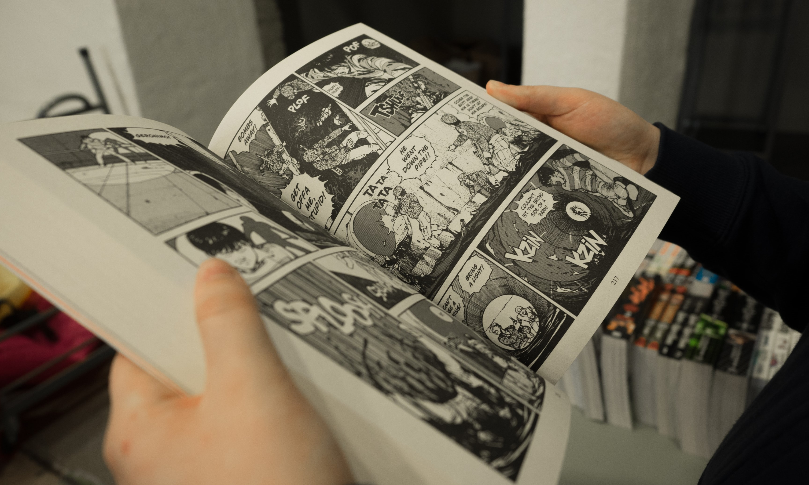

As I mentioned on the homepage, I have a number of nerdy hobbies. Nothing too crazy, but may as well mention them.
I've watched anime since I was a kid. These days I'll often turn on a dubbed anime while multitasking, if the other task doesn't require too much focus.

